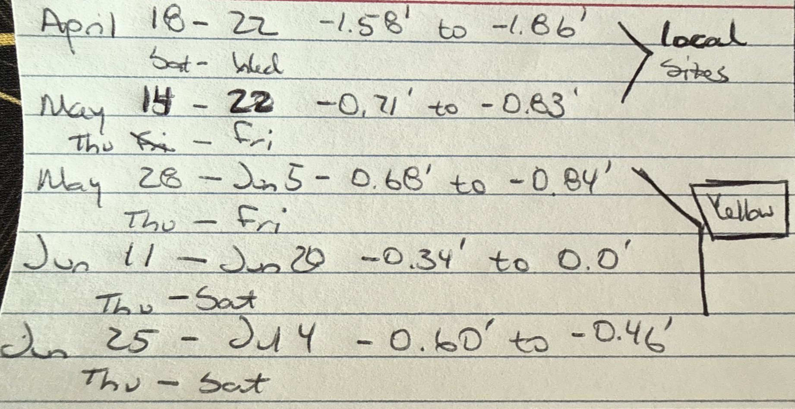
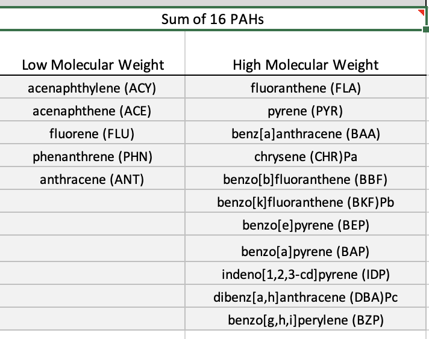
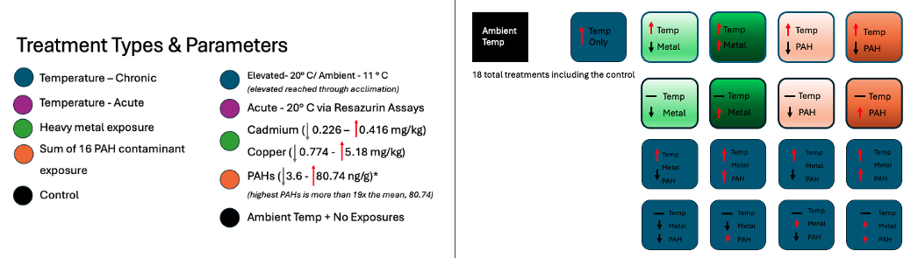
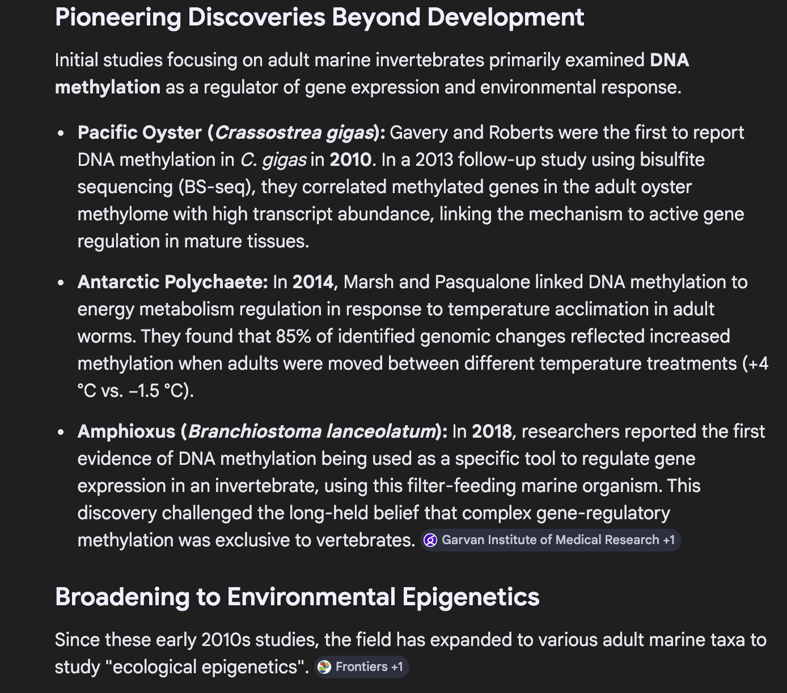
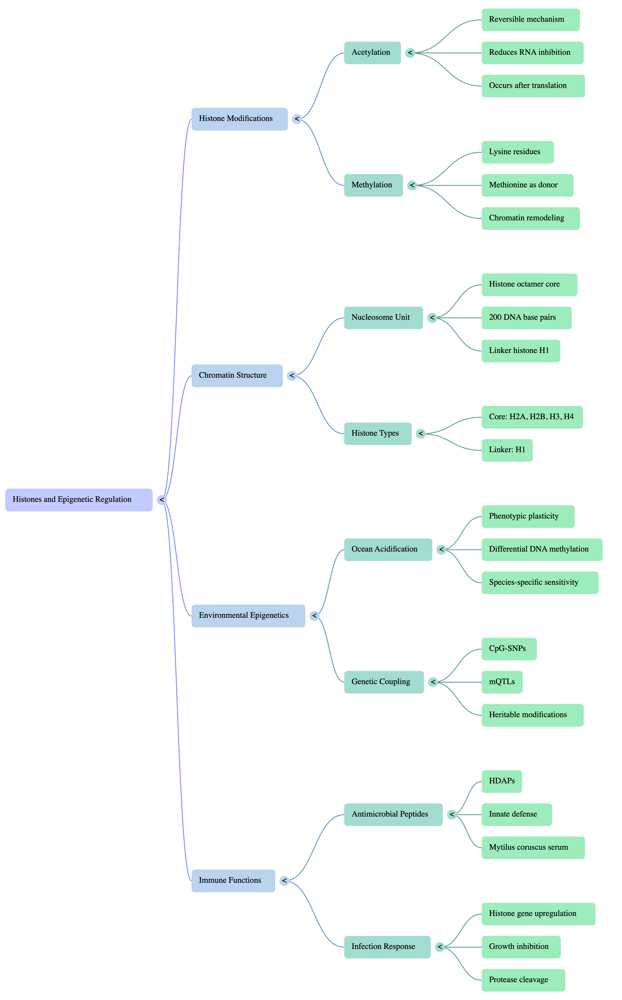
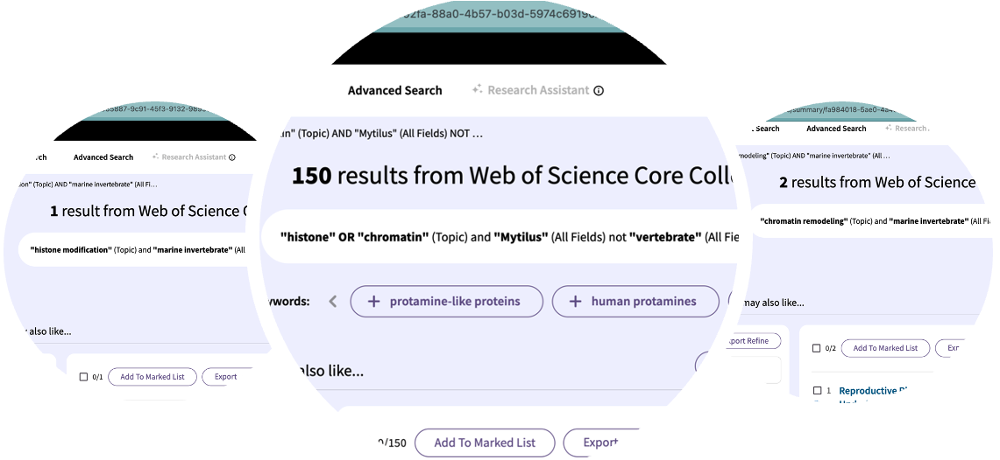
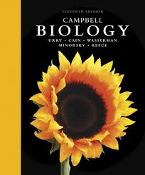

2026 March Daily Posts
This page compiles all daily posts for March 2026.
2026-03-01 — March Goals
March Goals
Reworking February’s In-Progress Goals
Get the biomarker manuscript over to WDFW for review and out to ICB before the March 31st submission deadline.
Complete DNA methylation data processing and begin exploratory analysis.
Finish PhD proposal and submit to committee for review.
Aspirational - Begin mussel experiment for Chapter 3 & 4.
Strategies for Success
Goal 1: Biomarker Manuscript
- Re-write results section
- Write abstract
- Finish polished visualizations, tables, and captions for the biomarker manuscript.
- Prepare a folder of polished supplementary materials, i.e., index maps, transformed data tables, and cleaned up R scripts.
- Send manuscript to complete committee for feedback.
Goal 2: DNA Methylation Analysis
- Re-familiarize myself with where I left off in late 2025 and backup the large files.
- Move through the initial Bismark pipeline (which I believe I finished) into optimizing alignment parameters and using that outcome for subsequent steps.
- Quantify methylation levels and visualize using IGV or JBrowse.
- Get feedback on initial results from Steven and/or other lab members before moving into downstream analyses.
Goal 3: PhD Proposal
- Review MS proposal and points of expansion.
- Clarify purpose of chapters 3 & 4 and significance of the work.
- Rework the introduction to shift the framing from identifying the problem to creating a solution to maximize the current monitoring program OR reduce the monitoring burden.
- List and clarify the specific methods for each chapter and how they were built based on the results of chapter 2.
Goal 4: Chapter 3 & 4 Mussel Experiment
- Put together a detailed experimental plan including timeline, materials needed, and data collection methods with 1-3 options for setup.
- Complete the Lab Risk Assessment form from EH&S to discuss with Steven to get approval for the experiment.
- Connect with Jon W and Sam W to work through physical space, setups, and ordering materials.
2026-03-02 — Getting Back on Track
Plan of the Day
- Catch up with weekly planning and task management since I’ve been sick for the last two weeks.
- Create March Goals and plan for attainment
Projects Touched Today
- Mussel Biomarkers
- PhD Proposal
- Lab Notebook
Progress Notes
- It feels like everything is a bit messy currently, so a dedicated session to untangle the projects and required outcomes was truly necessary.
- I first worked on extending the timelines and required deliverables for my non-dissertation projects before pivoting to planning my dissertation work. I chose to do it this way so I could identify what kind of timeline my non-dissertation projects would require so I could either delegate or manage the tasks for myself.
- I reviewed the current state of the biomarker manuscript and the PhD proposal and identified some steps to complete both projects.
Products & Word Count
- March Goals and Planning: 294 words
Today’s total: 294 words
March total: 294 words
2026 total: 21,041 words
Tomorrow’s Plan
- Tuesday’s are UW-RUA days, so the plan is to focus on my RUA deliverables only, returning my science on Wednesday.
2026-03-03 — UW-RUA Traveler Tuesday
Plan of the Day
- Focus on UW-RUA deliverables.
Projects Touched Today
- None
Progress Notes
- Nothing relevant to my work.
Products & Word Count
- No science products today.
Today’s total: 0 words
March total: 294 words
2026 total: 21,041 words
Tomorrow’s Plan
- Wednesday’s plan is to map out specific tasks in completing the biomarker manuscript to get it out to my committee for review before submission to ICB at the end of the month.
- After task mapping, I will knock out 1-2 identified tasks on the manuscript.
2026-03-04 — Groundhog Day X 1000
Plan of the Week: March 2 - 8, 2026
Daily Focus
- Thursday: No science work
- Friday: Biomarker Manuscript
- Saturday: No science work
- Sunday: Biomarker Manuscript
Plan of the Day
- It feels like I just keep repeating the same tasks over and over again. Each return is an improvement, but there has to be a better way to limit the rework and encourage expeditious support from my committee.
- Based on the list of biomarker manuscript deliverables, my first task is to update my Results section to include the corrected spatial analyses. Second task is to update Figures 1 and 2.
- Finally, my current task management communication set-up is not effective. Moving forward, general weekly plans will be added to Monday notebook posts with specific daily tasks and outcome determined in the daily notebook posts. This will allow for more flexibility in task management and better communication of progress and plans.
Projects Touched Today
- Mussel biomarkers
- Lab notebook
Progress Notes
- I met my first goal of working on the results written portion of the manuscript. It is a laundry list that needs to be more succinct and focused on the key findings. To support writing that, the notes below were helpful.
- I did not meet my second goal of updating Figures 1 & 2, reworking the results took significantly longer than planned.
- I have determined that an evening versus morning check-in that has both the plan of the day, the completed tasks, and the plan for the following day is a more effective tool and cuts down on rework.
Biomarker Analysis Tests Performed
- Shapiro- Wilkes
- Purpose: Determines if your data is normally distributed across the entirety of the dataset. The result determines parametric or non-parametric route for exploratory and subsequent analysis testing. Used at individual sample level.
- Test H0 and assumption: Is the data normally distributed?
- H0= Yes, p< 0.05 rejects H0
- Levene’s Test
- Purpose: Determines if the variability of your data is consistent across different groups. This is the non-parametric test that is more robust than the Bartlett Test when facing skewed data or outliers. Used at analysis group level to verify groups are different.
- Test H0 and assumption: Are all group variances the same?
- H0= Yes, p< 0.05 rejects H0
- KW/ Dunn’s or ANOVA/ Tukey’s
- Purpose: Pairwise or one-way comparison of three or more independent measurements. Test choice determined by Shapiro- Wilkes and Levene’s Test outcomes.
- KW/ Dunn’s is the non-parametric test and post-hoc
- ANOVA/ Tukey’s is the parametric test and pos-hoc
- Used at the group- level (site, reporting area) to compare the measured metrics, IBRs and chemical analyte concentrations.
- Test H0 and assumption: Are the means (ANOVA) or medians (KW) of the groups the same?
- H0= Yes, p< 0.05 rejects H0
- F-statistic indicates within- group and between- group variance as a ration. The higher the statistic, the more likely there is a difference to be confirmed. Should be used in interpretations verified by post-hoc testing.
- Post-hoc testing and assumption: Any rejected null is verified with a post-hoc test to control for Type I errors (false positives) and identify which means or medians are different.
- Purpose: Pairwise or one-way comparison of three or more independent measurements. Test choice determined by Shapiro- Wilkes and Levene’s Test outcomes.
- Spearman’s Rank Correlation
- Purpose: Non-parametric test to measure the difference in ranks of continuous variables in large datasets. Test choice determined by Shapiro- Wilkes and Levene’s Test outcomes. Used to determine any relationships between measured metrics and chemical analyte concentrations at the analysis group level.
- Test H0 and assumption: Is there an identifiable association between variables?
- H0= No, p< 0.05 rejects H0
- Test interpretation: Correlation coefficient (rho) ranges from -1 to +1, and should be used in conjunction with the p-value for correct interpretation.
- -1: Perfect negative association, as one variable increases the other variable decreases
- 0: No association between variables
- +1: Perfect positive association, as one variable increases, so does the other
- Kendall’s Tau
- Purpose: Conservative, non-parametric test to assess the concordance or discordance of pairs of variables in datasets with outliers or heavy skew. Used to identify data trends or clarify Spearman’s Rho ties in measured metrics and contaminant class concentrations at the analysis group level.
- Test H0 and assumption: Is there an identifiable association between variables?
- H0= No, p< 0.05 rejects H0
- Test interpretation: Kendall’s coefficient (tau) ranges from -1 to +1, and should be used in conjunction with the p-value for correct interpretation.
- -1: Perfect discordance (disagreement), as one variable increases the other variable decreases
- 0: No relationship between variables
- +1: Perfect concordance (agreement), as one variable increases, so does the other
- Global Moran’s I
- Purpose: Spatial analysis test that indicates if data is clustered, dispersed, or randomly distributed across a defined geographic area. Used to identify if there is a geographical component that affects the measured metrics, IBRs, and contaminant concentrations across all sites in the entire sampling region.
- Test H0 and assumption: Is there a significant spatial pattern in the data?
- H0= No, p< 0.05 rejects H0
- Expected I= Assigned theoretical value assuming H0 is true.
- Test interpretation: Moran’s I Index ranges from -1 to +1, and should be used in conjunction with the Expected Index (above), Z-score (determined during test if not already available) and p-value for correct interpretation.
- -1: Negative Autocorrelation (dispersed), dissimilar data values are adjacent to each other
- 0: No spatial relationship amongst variables (random)
- +1: Positive Autocorrelation (clustered), similar data values are adjacent to each other
- Local Indicators of Spatial Autocorrelation (LISA) a.k.a. Local Moran’s I
- Purpose: Spatial analysis test that indicates patterns of autocorrelation when the general Global Moran’s I identified clustered or dispersed data within the study’s geographic region. Used to identify the local spatial patterns in the measured metrics, IBRs, and contaminant concentrations across all sites within the entire sampling region.
- Test H0 and assumption: Where are the clusters or data outliers that drove the Global Moran’s I result and are they significant?
- H0= No, p< 0.05 rejects H0
- LISA interpretation: There are five possible outcomes that grouped and plotted by color:
- High-High / Hot Spot - red
- Low-Low / Cold Spot - blue
- High-Low / Outlier - pink
- Low-High / Outlier - light blue
- Not Significant - Gray
Results Overview
KW/ ANOVA
182 significant comparisons across reporting area and site that include the following metrics and indices:
P450, Shell Thickness, Condition Index, Raw mussel measurements
IBR Morph
Chlordanes, DDT, PAH- HMW, PBDE, Total Contaminants, Total PAH index
Spearman’s Correlation
94 total significant results
78 significant correlations between individual analytes and both the measured metrics and the IBRs
15 significant correlations between contaminant indices and the following:
- SOD, IBR Bio, IBR Combined, and raw mussel measurements
Kendall’s Tau
89 total significant results
79 significant correlations between individual analytes and both the measured metrics and the IBRs
- Single P450 and single IBR Morph correlations exist in the group whereas multiples for each of the other metrics and IBRs are significant
10 significant correlations between contaminant indices and the following:
- SOD, IBR Bio, IBR Combined, and raw mussel measurements
Global Moran’s I
The following chemical indices and measured metrics were significant for regional spatial autocorrelation:
Chlordane, DDT, HCH, PBDE, PAH- HMW, PCB, Pesticide, Total Contaminant, Total Metal and Total PAH
P450, Shell Thickness, Initial and Final Weights
LISA
- This result table is significant following the same pattern as the Global above with cluster groupings to confirm the Global pattern found significant.
Products & Word Count
Biomarker Manuscript Results re-write: 948 words
Today’s total: 948 words
Monthly total to date: 1242 words
Annual total to date: 21,695 words
Tomorrow’s Plan
- No science focus on Thursday.
2026-03-05 — No Science
Plan of the Week: March 2 - 8, 2026
Daily Focus
- Friday: No science work
- Saturday: No science work
- Sunday: No science work
Plan of the Day
- My weekly plan has shifted. I will return to science on Monday 3/9/26.
Projects Touched Today
- None
Progress Notes
- None
Products & Word Count
- None
Today’s total: 0 words
Monthly total to date: 1242 words
Annual total to date: 21,695 words
Tomorrow’s Plan
- No science focus on Friday.
2026-03-06 — No Science
Plan of the Week: March 2 - 8, 2026
Daily Focus
- Saturday: No science work
- Sunday: No science work
Plan of the Day
- My weekly plan has shifted. I will return to science on Monday 3/9/26.
Projects Touched Today
- None
Progress Notes
- None
Products & Word Count
- None
Today’s total: 0 words
Monthly total to date: 1242 words
Annual total to date: 21,695 words
Tomorrow’s Plan
- No science focus on Saturday.
2026-03-07 — No Science
Plan of the Week: March 2 - 8, 2026
Daily Focus
- Sunday: No science work
Plan of the Day
- My weekly plan has shifted. I will return to science on Monday 3/9/26.
Projects Touched Today
- None
Progress Notes
- None
Products & Word Count
- None
Today’s total: 0 words
Monthly total to date: 1242 words
Annual total to date: 21,695 words
Tomorrow’s Plan
- No science on Sunday.
2026-03-08 — No Science
Plan of the Week: March 2 - 8, 2026
Daily Focus
- Last day of the week
Plan of the Day
- My weekly plan has shifted. I will return to science on Monday 3/9/26.
Projects Touched Today
- None
Progress Notes
- None
Products & Word Count
- None
Today’s total: 0 words
Monthly total to date: 1242 words
Annual total to date: 21,695 words
Tomorrow’s Plan
- Monday 3/9 will be used to map out my plan for the week.
2026-03-09 — Setting Up the Week
Plan of the Week: March 9 - 15, 2026
- Working week listed from Mon - Sun
Daily Focus
- Monday: Mapping out the plan of attack for the week
- Tuesday: UW-RUA & Dean’s Office Work
- Wednesday: Lab Meeting & Prep for Thursday’s eDNA ‘think tank’ session and UW-AAF events
- Thursday: eDNA process & literature ‘think tank’ session with Kassi P and Connor, Nanopore and UW-AAF events
- Friday: Writing Accountability with KPJ, focus on Biomarkers
- Saturday: NW Straits Meeting - Ecology/ Conservation/ Public Sessions
- Sunday: Biomarker Manuscript
Plan of the Day
- My goal for today is to plan out the deliverables I have for the week - including the steps for making progress on upcoming deliverables to mitigate the 11th hour push that is getting really old.
- The remainder of the day will be spent prepping UW-RUA materials.
Projects Touched Today
- Mussel Biomarkers
- Proposal Chapters 3 & 4
- Yellow Island
- Lab Notebook
Progress Notes
Planning/ Lab Notebook
- Before setting up my plan for the week, I updated my lab notebook by adding daily log posts for the weekend, archiving February and putting all of those posts into a single file, reviewing my monthly goals, and brain dumping for all projects and tasks.
- Dean Search- ConEv
- I caught up with the Dean candidate search by watching Candidate A’s presentation and providing feedback in the survey.
- I virtually attended Candidate B’s presentaiton and submitted my feedback in the survey provided by the search committee.
Yellow Island
- I sent my requested dates for Yellow Island surveys this spring/ summer. Since my schedule and priorities have shifted, I am able to batch surveys within the longer/ lower low tide series in late May and early June.

Chapter 3 & 4
- I worked through a scaled- down version of the lab experiment for Chapters 3 & 4
- Using the 2021-22 WDFW data, I identified the region’s highest and lowest concentrations of the potential tx chemicals:
- Cadmium (mg/kg) - 0.226 (Arroyo Beach) - 0.416 (Penn Cove), mean= 0.310
- Copper (mg/kg) - 0.774 (Broad Spit) - 5.18 (Chimacum Creek Delta), mean= 1.17
- Sum of 16 PAHs (ng/g) - 3.6 (Hood Canal Holly) - 1600 (Des Moines Marina), mean= 80.74
- Only the 74 sites included in the biomarker work are included.
- Values listed above are the wet tissue values (blank corrected for PAH) with the Detected qualifier only.
- I used the Sum of 16 PAHs because they are the longest defined PAHs by the EPA for their toxicity to humans. The lowest PAH concentration was at a site not included in the earlier work (Drayton Harbor).
- Using the 2021-22 WDFW data, I identified the region’s highest and lowest concentrations of the potential tx chemicals:
The individual PAHs are listed in the image below - if a mixture is not feasible for experimentation, the high molecular weight PAHs are the most persistent while the low molecular weight PAHs can have higher acute toxicity; considering long- term exposure as the baseline for molecular response, we should prioritize the high weight PAHs.

Looking at the experimental design, there are two paths that can be taken regarding elevated water temperatures.
Chronic elevated water temperature at 20° C
Acute elevated temperature exposure through the use of resazurin assays to mimic tidal fluctuations in warmer months.
The general design without resazurin looks like the design below.

Products & Word Count
- Yellow Plan: 50 words + 2 tables/ time schedules with personnel allocation for TNC support
- Chapter 3 & 4 plan: 100 words + diagram/ sketch of tx options
Today’s total: 150 words
Monthly total to date: 1392 words
Annual total to date: 21,845 words
Tomorrow’s Plan
- Tuesday is a UW-RUA day, and likely will include no personal science work.
2026-03-10 — No Science - UW-RUA Tuesdays
Plan of the Week: March 9 - 15, 2026
Daily Focus
- Getting through the day.
Plan of the Day
- Completing my UW-RUA tasks and going back to sleep.
Projects Touched Today
- None
Progress Notes
- None
Products & Word Count
- None
Today’s total: 0 words
Monthly total to date: 1392 words
Annual total to date: 21,845 words
Tomorrow’s Plan
- Will be made tomorrow based on how I feel.
2026-03-11 — No Science - Still Sick
Plan of the Week: March 9 - 15, 2026
Daily Focus
- My weekly plan will shift significantly as I try to keep myself healthy.
Plan of the Day
- My plan for today is to rest and recover.
Projects Touched Today
- None
Progress Notes
- None
Products & Word Count
- None
Today’s total: 0 words
Monthly total to date: 1392 words
Annual total to date: 21,845 words
Tomorrow’s Plan
- Will be made tomorrow based on how I feel.
2026-03-12 — No Science
Plan of the Week: March 9 - 15, 2026
Daily Focus
- My weekly plan will shift significantly as I try to keep myself healthy.
Plan of the Day
- My plan for today is to rest and recover. Again, I have either rescheduled or canceled meetings to provide myself the time to rest. I already sent my eDNA protocols and information over to Kassi and Connor, so hopefully we just continue asynchronously until I feel better.
Projects Touched Today
- None
Progress Notes
- None
Products & Word Count
- None
Today’s total: 0 words
Monthly total to date: 1242 words
Annual total to date: 21,695 words
Tomorrow’s Plan
- Will be made tomorrow based on how I feel.
2026-03-13 — Resting & Reading
Plan of the Week: March 9 - 15, 2026
Daily Focus
- My goal this week has been to rest and figure out some low- effort ways to get back into the work groove without overextending; overdoing it has been prolonging my actual getting down to business.
Plan of the Day
- Rather than focus on products, I focused on reading and note taking to get back into low- effort work flow that allows for breaks as needed.
Projects Touched Today
- PhD Proposal
- Literature Review
Progress Notes
My goal today was to work through the literature to support a pivot in chapters 3 and 4 rather than do the deep work on my biomarker manuscript. I was able to clean up some sources, reinforce my historical epigenetics knowledge, and think through some ideas about shifting the lab- based experiment to support (possibly) my earlier biomarker and methylation work.
Between medication- induced naps, I was able to go back in time to read about how epigenetics became ‘a thing’ in 1942, came to the marine invertebrate arena re: developmental bio in urchins in 1973, and then be pleasantly reminded that amongst the first marine organism non-embryonic epigenetics work was done by Steven and published in 2010 with Mac. Pretty cool. Even AI can’t make this up! Pretty dope.

Trying to find some base connections between the current work and where I can go within a dissertation and in the mytilus genome - I built out a mindmap that can definitely be expanded, but is a decent start.

Products & Word Count
- Personal literature notes + mind map above
Today’s total: 0 words
Monthly total to date: 1242 words
Annual total to date: 21,695 words
Tomorrow’s Plan
- Will be made tomorrow based on how I feel. I expect to continue connecting the history of work with the Mytilus genome and epigenetic mechanisms sans non-coding RNAs.
2026-03-14 — Epigenetic Mechanisms
Plan of the Week: March 9 - 15, 2026
- My goal this week has been to rest and figure out some low- effort ways to get back into the work groove without overextending; overdoing it has been prolonging my actual getting down to business.
Plan of the Day
- Today’s plan is to clean up my notes from yesterday and identify where I have gaps in my understanding to direct my readings.
Projects Touched Today
- PhD Proposal
- Literature Review
Progress Notes
I took my notes, organized them into files separated by topic and keyword to help me understand what I was missing and what didn’t understand at the most fundamental level before pivoting to their application to my broader work.
I created 3 specific documents in my Epigenetic Mechanisms in Marine Invertebrates Knowledge Library. This links to my Notion project notes and my Foundational Knowledge Library.
My knowledge library is a space where I keep my notes on whatever topics from the ground up. For example, if I want to understand DNA methylation in Mytilus spp., I need a fundamental understanding of Mytilus biology, physiology, their ecosystem role, population in Puget Sound, general cellular biology, the current state of genomic work with marine bivalves, and finally the other epigenetic mechanisms that influence methylation. I don’t need to be an expert at the moment, but if I cannot articulate how these pieces interact, I cannot build hypotheses worth investigating.
I conducted a quick literature search in both Google Scholar and Web of Science. Lots of room (see image below) and lots of reading to be done.
From my preliminary notes, I was able to create three areas of notes applicable to understanding the role of histone modification and chromatin remodeling in a larger context as well as add several papers to Zotero for reading beyond abstracts, methods and figures.

Products & Word Count
- Notes on epigenetic mechanisms
Today’s total: 3131 words
Monthly total to date: 4373 words
Annual total to date: 26,068 words
Annual target total to date: 36,500 words
Tomorrow’s Plan
- Will be made tomorrow based on how I feel. I expect to build out my weekly plan and figure out what is on fire and what is just smoldering since I am super behind in just about everything.
2026-03-15 — Epigenetic Mechanisms- More Notetaking
Plan of the Week: March 9 - 15, 2026
- My goal this week has been to rest and figure out some low- effort ways to get back into the work groove without overextending; overdoing it has been prolonging my actual getting down to business.
Plan of the Day
- Today’s plan is to clean up my notes from Friday and Saturday and identify where I have gaps in my understanding to direct my readings.
Projects Touched Today
- Foundational knowledge- epigenetic mechanisms
- Literature Review
Progress Notes
- I continued the work outlined yesterday and created one additional document while diving a bit deeper into the literature from the search results on Friday and Saturday.
Products & Word Count
- Notes on epigenetic mechanisms
- Doc 4- concept mapping the mechanisms to my research: 385 words
Today’s total: 385 words
Monthly total to date: 4758 words
Annual total to date: 26,453 words
Annual target total to date: 37,000 words
Tomorrow’s Plan
- Will be to plan out the week, keep it low key and start prioritizing my in- progress work.
2026-03-16 — Celeste!!!!!! & Histones
Plan of the Week: March 16 - 22, 2026
- I am feeling marginally better, and since I didn’t map the week on Sunday, the plan today is to keep it low key so I don’t put myself back at square one.
- Monday: Map the week, catch up on UW-RUA work, confirm my spring/ summer tide schedule, build base histone and chromatin knowledge notes.
- Tuesday: UW-RUA work, no science.
- Wednesday: Return to epigenetic mechanisms to outline new Chapter 3 for my proposal.
- Thursday: Biomarker manuscript
- Friday: Biomarker manuscript
- Saturday: Return to Chapter 3 outline and start drafting options for the introduction and methods.
- Sunday: Continue Chapter 3 work.
Missing from the plan is the DNA Methylation work - it will be worked into the other priorities as time permits, or be a focus for spring break week next week.
Plan of the Day
- Today’s plan is to set up my science deliverables, catch up on my own learning, pivot from that learning into actionable application.
- First, review the basic biology of histones and create my notes on this aspect.
- Second, pull out the questions in my handwritten notes to compile and address later this week.
- Next, create my JKP 1v1 agenda and pivot to UW-RUA work.
Projects Touched Today
- PhD Proposal
- Literature Review
Progress Notes
- I pulled out my questions/ thoughts about linking the histone, chromatin, and methylation information to an actionable plan using current open source resources. Am I asking relevant and testable questions… we shall see!
- I spent my morning work block with Kristin building my notes about histones and their general biology. Between quick reading of lit and my good old Campbell biology textbook, I have a solid explainer of histones, their composition/ role, and a few notes about the differences in invertebrates. It took a bit longer than expected, but slow progress is better than no progress.

- I virtually attended Celeste’s defense where I learned more about tunicates than I ever thought! She did excellently. I know she worked hard, and seeing it all come together was awesome.
- I virtually attended the third Dean candidate’s presentation and submitted my feedback via the provided survey.
Products & Word Count
- Notes on epigenetic mechanisms
- Doc 5- histone explainer: 839 words
Today’s total: 839 words
Monthly total to date: 5597 words
Annual total to date: 27,292 words
Annual target total to date: 37,500 words
Tomorrow’s Plan
- UW-RUA Tuesday work blocks, no science.
2026-03-17 — UW-RUA Tuesday
Plan of the Week: March 16 - 22, 2026
- I am feeling marginally better, and since I didn’t map the week on Sunday, the plan today is to keep it low key so I don’t put myself back at square one.
Monday: Map the week, catch up on UW-RUA work, confirm my spring/ summer tide schedule, build base histone and chromatin knowledge notes.- Tuesday: UW-RUA work, no science.
- Wednesday: Return to epigenetic mechanisms to outline new Chapter 3 for my proposal.
- Thursday: Biomarker manuscript
- Friday: Biomarker manuscript
- Saturday: Return to Chapter 3 outline and start drafting options for the introduction and methods.
- Sunday: Continue Chapter 3 work.
Missing from the plan is the DNA Methylation work - it will be worked into the other priorities as time permits, or be a focus for spring break week next week.
Plan of the Day
- Tuesday’s are UW-RUA days, no deep work done today.
- Update weekend lab notebook posts.
Projects Touched Today
- Lab Notebook
- Yellow Island
Progress Notes
- Today I pulled my notes and updated my daily lab notebook posts from the weekend and Monday.
- I was able to confirm my spring/ summer tide schedule on Yellow and working with local sites. I submitted my schedule and needs on Monday and received very quick feedback from TNC today!
Products & Word Count
- No products today
Today’s total: 0 words
Monthly total to date: 5597 words
Annual total to date: 27,292 words
Annual target total to date: 38,000 words
Tomorrow’s Plan
- I was unable to get to my chromatin explainer on Monday, so that will be on the agenda along with developing an outline for Chapter 3 that incorporates some of the questions I’ve been kicking around.
2026-03-18 — Chromatin’s Turn to Shine
Plan of the Week: March 16 - 22, 2026
- I am feeling marginally better, and since I didn’t map the week on Sunday, the plan today is to keep it low key so I don’t put myself back at square one.
Monday: Map the week, catch up on UW-RUA work, confirm my spring/ summer tide schedule, build base histone and chromatin knowledge notes.Tuesday: UW-RUA work, no science.- Wednesday: Return to epigenetic mechanisms to outline new Chapter 3 for my proposal.
- Thursday: Biomarker manuscript
- Friday: Biomarker manuscript
- Saturday: Return to Chapter 3 outline and start drafting options for the introduction and methods.
- Sunday: Continue Chapter 3 work.
Missing from the plan is the DNA Methylation work - it will be worked into the other priorities as time permits, or be a focus for spring break week next week.
Plan of the Day
- Today is chromatin’s day to shine!
- Compile current notes, identify basic biology, any applicable marine invert knowledge, and develop some questions around the mechanism in the context of my work.
- Format and render my lab notebook posts so they look less like an unhinged diary…
Projects Touched Today
- Lab Notebook
- PhD Proposal
- Foundational Knowledge
Progress Notes
- I caught up the notebook posts, archived February’s posts to a single doc, and added a few images to make things more fun!
- I started by prepping for my afternoon meetings
- UW-RUA applicants X 2 re: research statement feedback
- NW Straits April 3rd Caroline Gibson ‘Conference’ prep re: posters and abstract submission guidelines
- Henry Art Gallery re: my written accompaniment piece for a summer showcase
- Alternate paths to marine science for a high school group related to the IG cohort
- I completed a one- pager for a STEM/social science collaboration in late 2026/ early 2027 if accepted
- I completed the initial pass on the chromatin explainer, but found that it is mostly questions and connections to histones (obviously), so this may be the shorted explainer yet!
- Once I clean this up, I will add it to the digital notes but right now my handwritten notes are all over the place.
- Next steps are to put all three mechanisms together and make a plan for how to use current open source data to develop an analysis plan.
Products & Word Count
- Building Bridges in Conservation: 765 words
- Chromatin raw notes (handwritten): 230 words
Today’s total: 995 words
Monthly total to date: 6592 words
Annual total to date: 28,287 words
Annual target total to date: 38,500 words
Tomorrow’s Plan
Clean up chromatin notes and add to epigenetics explainers in my foundational knowledge db.
Pivot to using the notes to create a plan for Chapter 3.
Review biomarker manuscript and make a plan for completion.
2026-03-19 — Integrating Epigenetic Mechanisms
Plan of the Week: March 16 - 22, 2026
- I am feeling marginally better, and since I didn’t map the week on Sunday, the plan today is to keep it low key so I don’t put myself back at square one.
Monday: Map the week, catch up on UW-RUA work, confirm my spring/ summer tide schedule, build base histone and chromatin knowledge notes.Tuesday: UW-RUA work, no science.Wednesday: Return to epigenetic mechanisms to outline new Chapter 3 for my proposal.- Thursday: Biomarker manuscript
- Friday: Biomarker manuscript
- Saturday: Return to Chapter 3 outline and start drafting options for the introduction and methods.
- Sunday: Continue Chapter 3 work.
Missing from the plan is the DNA Methylation work - it will be worked into the other priorities as time permits, or be a focus for spring break week next week.
Plan of the Day
- I originally slated time today to work on biomarkers, but I want to finish the chromatin work so I can mull over the mechanisms while working on the biomarker manuscript.
- Today is chromatin’s day to shine… again!
- Compile current notes, identify basic biology, any applicable marine invert knowledge, and develop some questions around the mechanism in the context of my work.
- I did not get through finalizing my chromatin notes and outlining Chapter 3, so I’m going to focus on that before moving into Biomarker work.
- First, review existing notes. Second, pull the questions out and put them with the rest and format notes like the others. Third, use the questions and notes to identify alternate ways to work with open source data for Chapter 3.
- After note taking, I will begin outlining a plan for Chapter 3.
- Pivoting to a bioinformatics chapter rather than a lab based one will allow me to make better decisions for the experiments, more strongly tie the mechanisms to the outcomes, and pull together the complete work cleanly.
Projects Touched Today
- PhD Proposal
- Foundational Knowledge
- DNA Methylation
Progress Notes
- I started by wondering how I ever made it out of Catholic school with this handwriting!
- My Chromatin notes are a bit all over the place, so after a quick review I identified some gaps I have in understanding. I’m filling those in as best as I can to knock out the cleaner notes.
- I moved my questions over to the running doc and realized that chromatin remodeling is possibly the most straightforward of all of the mechanisms.
- When I shifted over to DNA methylation, I found myself with more analysis/ workflow questions than mechanistic questions.
- I pivoted to creating a more comprehensive checklist and process to follow for myself since it is easy for me to rattle a few high-level steps, but unpacking them has been a process.
- I then created a decision outline with some guiding questions for the analysis.
- For both I chose to start at the point of sequences in hand - I will need to go back and make a section for sampling/ experimental design. Probably when I work on the methods for the manuscript.
- This exercise took an embarassingly long time, but really helped me get down to the ‘bones’ of the process and set myself up to comprehensively answer any questions with something more robust than “that’s how my lab does it”.
- For all of my explainers/ note docs I am certain there is plenty of room to make them better, and when the time is appropriate, I will, but for now I need to get back to basics and reinforce information or decisions I have been treating as ‘set-in-stone’ facts.
- I was feeling pretty ‘ready to apply’ this reinforced knowledge and quickly learned that sorting through old code and outputs after dinner is a recipe for instant despair.
- I went back to the DNA methylation analysis work to see where I left off and possibly move forward… I did this because evening writing is often akin to trying to sharpen a pencil with a blade of grass - not smart. So, I thought, maybe tangible do X get Y work would do it. Instead, I am now questioning every decision and trying to figure out how my maping efficiency has not gotten above 27%, and if that is even a problem… Key sign to pack it up for the day.
Products & Word Count
- Doc 6- Chromatin Explainer: 498 words
- Doc 7- DNA Methylation Analysis Checklist: 573 words
- Doc 8- DNA Methylation Analysis Decisions: 875 words
Today’s total: 1946 words
Monthly total to date: 8538 words
Annual total to date: 30,233 words
Annual target total to date: 39,000 words
Tomorrow’s Plan
- Friday starts with creating a specific task list for the biomarker manuscript, executing a reasonable amount of it, and then turning my attention to methylation.
2026-03-20 — Mussel Methylation Analysis Return
Plan of the Week: March 16 - 22, 2026
- I am feeling marginally better, and since I didn’t map the week on Sunday, the plan today is to keep it low key so I don’t put myself back at square one.
Monday: Map the week, catch up on UW-RUA work, confirm my spring/ summer tide schedule, build base histone and chromatin knowledge notes.Tuesday: UW-RUA work, no science.Wednesday: Return to epigenetic mechanisms to outline new Chapter 3 for my proposal.Thursday: Biomarker manuscript- Friday: Biomarker manuscript
- Saturday: Return to Chapter 3 outline and start drafting options for the introduction and methods.
- Sunday: Continue Chapter 3 work.
Missing from the plan is the DNA Methylation work - it will be worked into the other priorities as time permits, or be a focus for spring break week next week.
Plan of the Day
- Today’s goal was to work on biomarkers, but I am shifting to mussel methylation.
- Because I am behind basically everywhere in every aspect of my life, I have a heavy task day. That equates to a lack of time to focus on deep work, the kind of work that I need to do with the biomarker manuscript.
- I don’t want to not touch something science today, so I’m going to get something else cooking that is more formulaic going.
Projects Touched Today
- Mussel Methylation
Progress Notes
- My first step was to re-acclimate myself with where the project was in the pipeline, where it needed to go, and what the next tangible steps are.
- First, I have not yet gotten myself sorted on Klone, so I am still working on Raven.
- Reviewing the sequences and alignments, I realized three major things.
- No documentation of matching checksums for my sequences or for the reference genome.
- No notes on potential parameter testing/ mapping efficiency percentages and what was adjusted to get there, or what needed to be done.
- I didn’t remove the sequencer artifacts from the work, so my QC reports are 99% unnecessary and not useful.
- Since I just made a list of steps and decisions, I went back and used them!
- First, I removed all of the old, second, I reviewed and updated the code files that I created from Steven’s originals and modified for running on my machine, not Raven. Most important, I added some echoes so I wasn’t flying blind in the process.
- Next up, I cleaned up the repo folders, added code to concatenate the individual checksums into a single text file so I didn’t have to open 48 files…
- Once my sequences were uploaded/ downloaded/ pulled into Raven, I pulled out one sample (reads 1 & 2) from the high PAH (69M) and low PAH (272M) to run through the complete process before analyzing the complete dataset.
- I moved all other sequences out of the raw data folder and committed.
Products & Word Count
- Updated code docs for QC, trimming, reference pull and alignment: ~100 words
Today’s total: 100 words
Monthly total to date: 8638 words
Annual total to date: 30,333 words
Annual target total to date: 39,500 words
Tomorrow’s Plan
- Moving forward with the preliminary sequence run through QC, trimming, and alignment.
- Continuing to knock out the other non-lab tasks and work I was not able to complete today.
2026-03-21 — Moving forward with Mussel Methylation Analysis
Plan of the Week: March 16 - 22, 2026
- I am feeling marginally better, and since I didn’t map the week on Sunday, the plan today is to keep it low key so I don’t put myself back at square one.
Monday: Map the week, catch up on UW-RUA work, confirm my spring/ summer tide schedule, build base histone and chromatin knowledge notes.Tuesday: UW-RUA work, no science.Wednesday: Return to epigenetic mechanisms to outline new Chapter 3 for my proposal.Thursday: Biomarker manuscriptFriday: Biomarker manuscript- Saturday: Return to Chapter 3 outline and start drafting options for the introduction and methods.
- Sunday: Continue Chapter 3 work.
Missing from the plan is the DNA Methylation work - it will be worked into the other priorities as time permits, or be a focus for spring break week next week.
Plan of the Day
- Today’s goal is to work on my new Chapter 3 outline and keep pushing the methylation work forward
Projects Touched Today
- Mussel Methylation
Progress Notes
- The day started with running FastQC and MultiQC on the representative samples.
- I did not properly move the sequencer artifacts, so my QC rerun failed repeatedly until I realized it was because I needed to properly move those files and not adjust the code… that took a little too long.
- FastQC went well and reminded me that I need to ask again what some of the quality parameters mean in the broader analysis-impact pov.
- I spent the better part of the day checking why I was stuck in MultiQC purgatory… I am doing something wring because it should not take half a day to run MultiQC on 4 samples, but after some troubleshooting, I can’t figure out what it is. I will ask for help on this one before I screw up something in the shared drives on Raven.
- I moved over to trimming, bypassing MultiQC while keeping FastQC.
- Based on on the FastQC returns, the standard 20by at the beginning and end of the raw sequences makes sense. I see we use fastp, but TrimGalore is everywhere - I will try to sort out the differences or create a comparison at another less time-restricted moment.
- I completed trimming, reviewed those FastQC files (bypassing MultiQC until I can figure out where it is getting stuck), and moved on to grabbing the reference genome from NCBI and starting the alignment.
- Once I started the alignment script, I let that run while I worked on some of my UW-RUA deliverables for the week.
Products & Word Count
- No tangible products today.
Today’s total: 0 words
Monthly total to date: 8638 words
Annual total to date: 30,333 words
Annual target total to date: 40,000 words
Tomorrow’s Plan
- No science on Sunday. I am exhausted, still taking my cold meds and hoping to shake this off for good.
2026-03-22 — Running Errands & Running Alignments
Plan of the Week: March 16 - 22, 2026
- I am feeling marginally better, and since I didn’t map the week on Sunday, the plan today is to keep it low key so I don’t put myself back at square one.
Monday: Map the week, catch up on UW-RUA work, confirm my spring/ summer tide schedule, build base histone and chromatin knowledge notes.Tuesday: UW-RUA work, no science.Wednesday: Return to epigenetic mechanisms to outline new Chapter 3 for my proposal.Thursday: Biomarker manuscriptFriday: Biomarker manuscriptSaturday: Return to Chapter 3 outline and start drafting options for the introduction and methods.- Sunday: Continue Chapter 3 work.
Missing from the plan is the DNA Methylation work - it will be worked into the other priorities as time permits, or be a focus for spring break week next week.
Plan of the Day
- Today’s goal is to monitor my alignments running in Raven and knockout household tasks.
Projects Touched Today
- Mussel Methylation
Progress Notes
- I checked in on the alignments that I started running last night.
- The reference was downloaded and checksums confirmed.
- The first sample alignment was completed around midday.
- The second sample was completed in the evening.
- I began looking at the next steps by reviewing the lab handbook, Steven’s Mytilus methylation repo, and Sam’s workflow for methylation analysis in oysters.
- I know that deduplication, methylation extraction and parameter testing are the next general steps, but my BASH code is pretty rudimentary and I spent an awfully long time just sorting what some of the commands do before building a base version.
- I built the ‘simple’ version by first writing out, in full words, what steps needed to be taken before turning to write out the script.
- In the process, I also noticed that I have some data files that saved to the code directory, so I need to remember to move them and ensure I am setting up my data and output paths properly in the scripts.
- I have not started the deduplication; that will be a task for next week while I am working on getting some of my other projects moving forward as well.
Products & Word Count
- Simple deduplication script: 1
- Written process for deduplication, methylation extraction, and parameter testing: ~200 words
Today’s total: 200 words
Monthly total to date: 8838 words
Annual total to date: 30,533 words
Annual target total to date: 40,500 words
Tomorrow’s Plan
- Working on UW-RUA programming and traveler management.
2026-03-23 — UW-RUA Deliverables
Plan of the Week: March 23 - 29, 2026
- I am still not at full capacity and my plan for the week is to map out the rest of March and Spring Quarter since I have some very real, very important deadlines I’d like to hit.
- A full plan will be added to my daily post for Tuesday 3/24/26.
Plan of the Day
- Today’s goal is to make progress with some of my UW-RUA deliverables and to map out the week before pivoting to mapping out the upcoming quarter.
Projects Touched Today
- None
Progress Notes
- I managed to make decent headway on the data analysis of the UW-RUA program outcomes.
- I pulled in the program stats, cleaned them and made some base plots to illustrate traveler demographics, colleges/ departments within UW, and the host institutions visited.
- I worked on writing up some more testimonials (that will accompany the data) based on the interviews I’ve completed since the end of Fall Quarter.
- I put together the flyer text for the Scholarly Skill Building professional development programming series for review and edit.
Products & Word Count
- No science products today.
Today’s total: 0 words
Monthly total to date: 8838 words
Annual total to date: 30,533 words
Annual target total to date: 41,000 words
Tomorrow’s Plan
- More UW-RUA work and planning of science deliverables, not just the UW-RUA ones.
2026-03-24 — Weekly and Spring Quarter Planning
Plan of the Week: March 23 - 29, 2026
High- level outline for the week. Adjusted daily to reflect progress of the day before
- I am still not at full capacity and my plan for the week is to map out the rest of March and Spring Quarter since I have some very real, very important deadlines I’d like to hit.
Monday - Catch up on UW-RUA and science project planningTuesday - Planning & biomarker manuscript work
Wednesday - Biomarker Manuscript
Thursday - Chapter 3 proposal
Friday - Chapter 3 proposal
Saturday - Biomarker Manuscript
Sunday - Weekly planning and prep
Plan of the Day
Granular level task list to accomplish the high- level goal outlined above
- Today’s goal is to map out the week before pivoting to mapping out the upcoming quarter and tackling the highest priority identified from the planning.
- Since I was unable to do more than the UW-RUA work yesterday, planning shifted to today.
- Based on the planning session (in progress notes below), my first priority is the biomarker manuscript and that will be the primary project I work on today.
Projects Touched Today
- Yellow Island
- Kenya eDNA
- Biomarker Manuscript
- DNA Methylation
Progress Notes
- I started with a massive brain dump of all of the projects, tasks, ideas, thoughts, etc that I want to prioritize, delegate, or put in order for next- up.
- I didn’t do a monthly retro moving into March, so some of that was done after the brain dump and revealed a few things that I will try to keep in mind moving into April and spring quarter.
- First, no matter how I time block, my brain does not appreciate pivoting projects in the same day. One or the other project gets the attention, and no matter how I try to force myself, I cannot give full attention (for deep work) to more than one. This is a problem.
- Second, my highest focus times of day are shifting to a bit later than what I’m used to; typically my most productive times are between 6:00 am - 12:00 pm, and are now shifting back to more like 9/ 10:00 am - 3:00 pm. This is a conflict with how my current meetings are scheduled and anything I can shift moving forward, I will.
- Third, while I am continually saying no to things, I am still underwater. I cannot currently identify what needs to be cut out, but my ‘no thank you’ game has got to get stronger.
- My priorities for March/ April are as follows:
- Biomarker manuscript out to ICB
- PhD proposal for bypass to my committee NLT April 1st
- Getting back into weekly meetings with Steven to go over the updates
- A committee meeting scheduled for sometime between 4/13 - 4/24
- Finishing initial DNA methylation analysis
- Getting through the 2 sequence test run (deduplication, methylation extraction and then moving into bio/ phys impact via gene ID/ annotation)
- Adjusting the parameters to ensure we’re getting the most out of the data without inflating error or over-representation of results.
- Visualizing the results of the test run
- Completing the workflow with the rest of the sequences
- Pulling together my complete bypass package for May 15th submission deadline
- Biomarker manuscript
- Truncated MS proposal & cover letter explaining expansion from MS to PhD
- Polished PhD proposal based on committee feedback
- Auxiliary work that must move forward, but can do so slowly
- Yellow Island surveys
- Kenya eDNA + mormyrid gut content data
- Refining PromethION protocols for the Kenya data
- Preparing for the Climate Wayfinders training over the summer
- I didn’t do a monthly retro moving into March, so some of that was done after the brain dump and revealed a few things that I will try to keep in mind moving into April and spring quarter.
- Shifting gears from project & task identification, and into delegation:
- I confirmed my spring/ summer travel date adjustments with TNC to push my survey window back.
- I met with Connor and Kassi P. to help them build out the eDNA pipeline and gave them next steps they can accomplish without me.
- I met with a former GEODUC student who was interested in post-bac opportunities in the lab; not sure our goals are aligned at this time.
- Before hopping into my next round of tasks, I wanted to check off an easy transition task - updating my GitHub landing page to more accurately represent what I am working on. Mainly because it will be linked to my work showcased on April 3rd at the NW Straits Foundation Caroline Gibson ‘conference’.
- I updated my work description, order of the sections, and removed some of the one-off work that was done a long time ago.
- Next, I went back to the biomarker manuscript and folder of figures/ tables/ results and made a list of next steps:
- Fully updating results (not just comments)
- Putting the figures into the manuscript where they belong, regardless of how polished or not they look
- Identifying where better citations or more detail should be added
- I really phoned it in in the discussion/ conclusion and tying our results back to the problem identified in the introduction
- The introduction can be more straight forward
- I need to decide what I am calling the geographic groupings and stick to it
- Write the abstract! (totally forgot about that…)
- After reviewing it, I read it for coherence, gaps and line edits. I worked on reworking the results section; it is not great, but I think I have a good idea of how I want the most important spatial results to read while the rest are just added to the supplement.
- I wrapped up by reviewing my deduplicating and parameter checks code for the methylation data.
- Again, I took examples from the lab and built a version that I understand from those examples.
- I got it up on Raven and if the spinning sparkle of death ever stops, I will find out shortly if it was successful from a coding point of view…
Outcomes: Products & Word Count
- Biomarker results edits: 237 words
Today’s total: 237 words
Monthly total to date: 9075 words
Annual total to date: 30,770 words
Annual target total to date: 41,500 words
Next Up: Tomorrow’s Plan
- Will be determined by the end of the day!
2026-03-25 — DNA Methylation & Meetings
Plan of the Week: March 23 - 29, 2026
High- level outline for the week. Adjusted daily to reflect progress of the day before
- I am still not at full capacity and my plan for the week is to map out the rest of March and Spring Quarter since I have some very real, very important deadlines I’d like to hit.
Monday - Catch up on UW-RUA and science project planning
Tuesday - Planning & biomarker manuscript workWednesday - Biomarker Manuscript
Thursday - Chapter 3 proposal
Friday - Chapter 3 proposal
Saturday - Biomarker Manuscript
Sunday - Weekly planning and prep
Plan of the Day
Granular level task list to accomplish the high- level goal outlined above
- Today’s goal is to return to the plan mapping I finished yesterday and complete the task breakdown, refine the project priorities, and start plugging the tasks into my planner dashboard in Notion.
Projects Touched Today
- DNA Methylation
Progress Notes
- I kicked off the day with a new paper from my Google alerts, One Health perspectives on veterinary residues and bioaccumulation in marine mussels. DOI link to the paper.
- This is a review paper focused on contaminant mixtures and their potential impacts to mussels, and how those outcomes link to human health outcomes using the One Health framework.
- The authors focus on heavy metals and pharmaceuticals as the perturbation/ mixture.
- Call to Action: Integrate monitoring programs, molecular ecotox, and new tech to mitigate contaminant’s entry into waterways.
- I moved into task planning. I identified the main projects that must be pushed forward, the secondary projects that are moving forward under delegated efforts, and potential upcoming project work.
- This took a significantly longer time to get through, so I focused on the priority project tasks in the allotted time block.
- Thursday will see a revisit of the task defining and scheduling since I need to pivot to meeting prep.
- First ‘meeting’ was my working block with KPJ.
- I walked myself through the Bismark results so I could understand what I was seeing and what questions I actually needed to ask.
- I returned to my problem trying to access the qc programs. I haven’t been able to run a successful MultiQC yet. So, I created an environment in Raven where I can run FastQC and MultiQC without searching for the tools to only find the directories - this means I either don’t get a result, or the result returns an error after running for days.
- I updated my QC, trim, alignment and deduplication scripts to reflect this new environment.
- I ran the QC and trim files for all remaining sequences; I hadn’t done that yet, only for the two I am working with.
- I left that work block and joined lab meeting. We shared progress and upcoming plans.
- I need to update the lab calendar with my availability next quarter.
- I moved over to my weekly eDNA meeting with Connor and Kassi P
- We went over the introductory literature I shared, field protocols (for Connor’s upcoming work), and next steps for our meeting in two weeks.
- I completed my second of three total high school marine bio sessions after that.
- Once meetings were out of the way, the remainder of the day was spent monitoring the QC and trimming scripts on Raven and knocking out some UW-RUA tasks for travelers.
Outcomes: Products & Word Count
- No direct products
Today’s total: 0 words
Monthly total to date: 9075 words
Annual total to date: 30,770 words
Annual target total to date: 42,000 words
Next Up: Tomorrow’s Plan
- To complete the task ‘scheduling’ and prepare for the smaller project deliverables upcoming between March 31st - April 6th.
2026-03-26 — Conservation Ecology & DNA Methylation
Plan of the Week: March 23 - 27, 2026
High- level outline for the week. Adjusted daily to reflect progress of the day before
- I am still not at full capacity and my plan for the week is to map out the rest of March and Spring Quarter since I have some very real, very important deadlines I’d like to hit.
Monday - Catch up on UW-RUA and science project planning
Tuesday - Planning & biomarker manuscript work
Wednesday - Biomarker ManuscriptThursday - Chapter 3 proposal
Friday - Chapter 3 proposal
Saturday - Biomarker Manuscript
Sunday - Weekly planning and prep
Plan of the Day
Granular level task list to accomplish the high- level goal outlined above
- Today’s goal is to complete the followings:
- NWStraits abstract and poster mock-up
- Locate open source sequences for Chapter 3
- Update or refine and add my figures to the biomarker manuscript
- Prep for my meeting with PSP and Tiara for the social science project
- Complete the task mapping for the lower-priority projects
Projects Touched Today
- DNA Methylation
- NWStraits Caroline Gibson Conservation Symposium
- Conservation Ecology
Progress Notes
- I knocked out my abstract and followed up with my current and former mentees to remind them to get the requested information to me by the end of their day on Friday.
- My poster is about increasing access to increase larger opportunities in conservation ecology
- The plan is to link programs like Yellow, REU, and DDCSP to their larger impacts in conservation
- Somehow, I managed to lock up Raven on my end. I thought the additional script I started yesterday was MultiQC only, not the alignment script, and that caused everything to just hang in the air.
- I force- quit all terminals running
- I attempted to commit the files that I changed and managed to stare at a ‘commit’ screen that would not respond to any staging. I realized far too late that I checked one of the huge packages with about a gazillion parts while I was clicking around to see if I had just lost my mouse or if the interface was lagging…
- Now, I can’t get Raven to load without crazy lagging - I haven’t waited this long to accomplish anything since dial-up days- so I know I screwed something up on my side.
- I have shut it all down, killed all processes, and am going to restart it after my afternoon meeting.
- I added a timeline, products, notes, and a revised research question section to my proposal idea with PSP.
- Tiara and BIMS will be the non-profit partner with me as the lead researcher - if our proposal is accepted.
- Next steps are to polish the plan slightly for the next meeting with PSP, BIMS and WA SeaGrant to ensure we are aligned in the mission.
- Next up, finding RNA-seq in NCBI for some gene expression and mussel methylation comparisons for Chapter 3.
- I created a Bookmarked folder of all 47 of the SRAs and GEO datasets for Mytilus spp., focusing on RNA-seq data in mantle tissue, including both non-stressed and treatment stressed samples. I then added a few that were other tissue types just in case. As a reminder, I chose mantle tissue because that is the tissue type I am exploring in the methylation analysis.
- I read the abstracts to confirm data type, treatment, and preparation process. Anything without an abstract was flagged for removal.
- I started working my way through a quick skim of the methods section of papers related to the sequences so I can confirm fully the availability, sequencing platform, and sample preparation process. This helped me flag those prepared for immuno-assays and immune function chromosome tags that weren’t clear in the abstract nor the sequence name in the NCBI databases.
- I set a 90 minute time block on this, so I marked where I left off, and will return during another ‘transition task’ work block.
- Returning to Raven. I had to reach out to Sam to kill anything I had going on because I very effectively put a pause on the work…
- I dug a bit more and realized it was a GitHub issue - one cannot simply commit using terminal and then attempt to push or pull with the interface without creating an issue..
- Once I solved my issue, I cleaned out the old mussel methylation repo taking up huge space, cleaned up my commit, and restarted Raven.
- Success was getting my MultiQC reports for the raw and trimmed files after looping through the output folders to ensure the downloads, checksums, and trimmed files existed with their respective FastQC files.
- I moved over to running the full alignments with Bismark after verifying that the reference was downloaded, checksum match confirmed, and Bismark bisulfite genome created. Now we wait…
- I brainstormed some ideas for the Black Opportunity Fund call, something art and environment related.
- Put out a few feelers for artists, branding/ marketing, and venues.
- I started pulling together all of my project notes for the 3 projects I have listed on my lab notebook site
- Biomarkers- Google docs analysis notes doc
- Methylation - will need to pull from daily notebook posts
- Yellow - my UW Google drive, my personal Google drive, and daily posts.
- I’m certain the handwritten notes on all projects won’t make it in for now, but will be in future projects because I just don’t want to waste time pulling them for projects reaching their end.
- I wrapped up the day by updating my CV using Vitae and finally getting to my About Me GitHub page since I will be presenting myself and my work in 2 weeks and I’d like folks to have something more substantial than my GH landing page only.
Outcomes: Products & Word Count
- NWStraits Abstract: 107 words
- PSP Social Science Proposal Update: 412 words
- BOP Art x Environmentalism Ideas: 277 words
- Creating my About Me .qmd page: 528 words
- NWStraits poster mock-up based on mentee responses so far
Today’s total: 1324 words
Monthly total to date: 10,399 words
Annual total to date: 32,094 words
Annual target total to date: 42,500 words
Next Up: Tomorrow’s Plan
- Will be determined by the end of the day!
2026-03-27 — Data Management, DNA Methylation, and …
Plan of the Week: March 23 - 29, 2026
High- level outline for the week. Adjusted daily to reflect progress of the day before
- I am still not at full capacity and my plan for the week is to map out the rest of March and Spring Quarter since I have some very real, very important deadlines I’d like to hit.
Monday - Catch up on UW-RUA and science project planning
Tuesday - Planning & biomarker manuscript work
Wednesday - Biomarker Manuscript
Thursday - Chapter 3 proposalFriday - Chapter 3 proposal
Saturday - Biomarker Manuscript
Sunday - Weekly planning and prep
Plan of the Day
Granular level task list to accomplish the high- level goal outlined above
- Today’s goal is to complete the followings:
- Backup my methylation data from Raven on Gannet
- Get my full sequence alignments running
- Outline Chapter 3 with research questions
- Finish review of bookmarked sequences
- Identify usable NCBI data sources and plan for them
- Identify other ways to integrate epigenetic mechanisms to make the chapter more robust
Projects Touched Today
- DNA Methylation
- Chapter 3
Progress Notes
- I have two meetings and a doctor’s appointment today, spread out at the most inconvenient intervals, so my plan today is to knock out tasks and work that is easy to put down and pick back up.
- First, I dropped into science hour to get Sam’s help in completing the rsync from Raven to Gannet for my methylation repo.
- I cleaned up old files, removed old repos, and made sure to commit anything necessary to github via terminal instead of the interface before completing the sync.
- We also chatted about the difference in parameters used to align the methylation sequences. I’m going with the standard choice in the lab re: stringency since the outputs don’t seem to show any significant differences.
- Next I worked on creating the deduplication script for the full sequences (not just the two I was working on, and not just the first 10k pairs) with a MultiQC output.
- I reviewed the methylation extraction code from both Sam and Steven and started to put that together.
Outcomes: Products & Word Count
- SACNAS Abstract: 213 words
- Something else: 0 words
- Created scripts for the methylation analysis: 2 scripts
Today’s total: 0 words
Monthly total to date: 10,399 words
Annual total to date: 32,094 words
Annual target total to date: 43,000 words
Next Up: Tomorrow’s Plan
- Will be determined by the end of the day!
2026-03-28 — Saturday- Something
Plan of the Week: March 23 - 29, 2026
High- level outline for the week. Adjusted daily to reflect progress of the day before
- I am still not at full capacity and my plan for the week is to map out the rest of March and Spring Quarter since I have some very real, very important deadlines I’d like to hit.
Monday - Catch up on UW-RUA and science project planning
Tuesday - Planning & biomarker manuscript work
Wednesday - Biomarker Manuscript
Thursday - Chapter 3 proposal
Friday - Chapter 3 proposalSaturday - Biomarker Manuscript
Sunday - Weekly planning and prep
Plan of the Day
Granular level task list to accomplish the high- level goal outlined above
- Today’s goal is to knock out the first version of the NWS poster to ask for feedback early next week
Projects Touched Today
DNA Methylation
NWS Symposium
Progress Notes
- After going over the parameters that Sam and I talked about yesterday, I annotated the scripts so I wouldn’t forget.
- I am still running the methylation analysis with the standard alignment parameters (L,0, -0.6) because this aligment stringency is the best balance between mapping efficiency and not inflating the CHH or CHG percentages; methylation percentage changes marginally (11.5% to 11.7%)
- Clarifying what I mean re: parameters below. When running Bismark and Bowtie2, the list of parameters below tell the programs what to do.
- First, The goal is to convert the reference genome to a bisulfite- ready version for alignment, and then Bowtie2 aligns my sample sequences with the bisulfite- converted reference genome.
- Alignment ‘matching’ stringency. This parameter check was done on the first 10k sequences of the aligned test sequences (69M- high PAH and 272M- low PAH) scores ranging from L,0,-4 to L,-1,-0.6). This is basically a ‘how many mismatches are too many’ check - the smaller the number (more negative), the more relaxed the matching and potentially the driver behind mapping efficiency differences. L- linear function, first number is the intercept, second number is the slope. These are impacted by read length… will add read length thresholds as a later- knowledge project.
- Output order. The Reorder call just puts the outputs in the same order as the inputs and supports future troubleshooting. This is for organization/ file management.
- Quality score. The call to ignore-quals is just a way to bypass any PHRED/ quality scores and treat all of the sequences the same. This is a data management command.
- R1 and R2 are a team. The —no-mixed command tells Bowtie2 to keep sequence pairs together, when one aligns but the other does not, the whole thing has to go. This makes the mapping more conservative and supports downstream analysis/ interpretation.
- Direction. Non-directional versus directional calls either release or restrict the directional library assumptions. Library prep should have preserved strand directionality and this is the default call for the program, so no need for changing up now!
- Discordancey. A no-discordant call forces the alignments to follow paired-end logic (supporting the —no-mixed command).
- Dovetail and maxins: next up to double check they are actually commands to ensure fragments and overlapping reads aren’t discarded, but I have to double check that because all of the online resources use descriptions that are as clear as mud.
- I shifted over to sketching out a few poster ideas, settling on one that is too conceptual, and returning to square one.
Outcomes: Products & Word Count
- Bismark & Bowtie2 Command Breakdown: 578 words
Today’s total: 578 words
Monthly total to date: 10,977 words
Annual total to date: 32,672 words
Annual target total to date: 43,500 words
Next Up: Tomorrow’s Plan
- Taking the day off to hang out with the kid
2026-03-29 — Sundays are for Hanging Out with the Kid
Plan of the Week: March 23 - 29, 2026
High- level outline for the week. Adjusted daily to reflect progress of the day before
- I am still not at full capacity and my plan for the week is to map out the rest of March and Spring Quarter since I have some very real, very important deadlines I’d like to hit.
Monday - Catch up on UW-RUA and science project planning
Tuesday - Planning & biomarker manuscript work
Wednesday - Biomarker Manuscript
Thursday - Chapter 3 proposal
Friday - Chapter 3 proposal
Saturday - Biomarker Manuscript
Sunday - Weekly planning and prep
Plan of the Day
Granular level task list to accomplish the high- level goal outlined above
- Today’s goal is to brain dump the tasks and priorities for the week, check the status of the methylation data on Raven, and hang out with the kid.
Projects Touched Today
- DNA Methylation
Progress Notes
- The only science I did today was to check the alignment script I am running on Raven.
- I had to restart the Bismark code, I made tool path adjustments in the script and made a coding mistake, so the reference portion ran again because I forgot to un-comment the skip loop when I was making other changes. It is the same reference, so that’s fine- just a time waster.
Outcomes: Products & Word Count
- No tangible products
Today’s total: 0 words
Monthly total to date: 10,977 words
Annual total to date: 32,672 words
Annual target total to date: 44,000 words
Next Up: Tomorrow’s Plan
- Use my brain dump list to set up the week, knock out the NWS poster, and prep for the TNC meeting next week.
2026-03-30 — Spring Quarter Monday
Grab progress notes from Notion - note on 3.31.26
Plan of the Week: March 30 - April 5, 2026
High- level outline for the week. Adjusted daily to reflect progress of the day before
- I am finally as close to healthy as I have been in awhile, so as long as the anxiety of being so behind doesn’t take me out, I will be solid!
Monday - Catch up on UW-RUA and NWS Poster
Tuesday - UW-RUA, No Science
Wednesday - Biomarker Manuscript
Thursday - Biomarker Manuscript
Friday - NWS Symposium
Saturday - Biomarker Manuscript
Sunday - No Science
Plan of the Day
Granular level task list to accomplish the high- level goal outlined above
- Today’s goal is to
- Complete NWS poster
- Check on methylation alignment progress
Projects Touched Today
- DNA Methylation
- NWS Symposium
Progress Notes
- The notes are in Notion
Outcomes: Products & Word Count
- Some product…
Today’s total: 0 words
Monthly total to date: 10,977 words
Annual total to date: 32,672 words
Annual target total to date: 44,500 words
Next Up: Tomorrow’s Plan
- Tuesdays are UW-RUA days.
2026-03-31 — UW-RUA Tuesday
Plan of the Week: March 30 - April 5, 2026
High- level outline for the week. Adjusted daily to reflect progress of the day before
- I am finally as close to healthy as I have been in awhile, so as long as the anxiety of being so behind doesn’t take me out, I will be solid!
Monday - Catch up on UW-RUA and NWS PosterTuesday - UW-RUA, No Science
Wednesday - Biomarker Manuscript
Thursday - Biomarker Manuscript
Friday - NWS Symposium
Saturday - Biomarker Manuscript
Sunday - No Science
Plan of the Day
Granular level task list to accomplish the high- level goal outlined above
- There is no science goal today.
Projects Touched Today
- None
Progress Notes
- None
Outcomes: Products & Word Count
- No science products
Today’s total: 0 words
Monthly total to date: 10,977 words
Annual total to date: 32,672 words
Annual target total to date: 45,000 words
Next Up: Tomorrow’s Plan
- Working block with KPJ. A full plan will be made based on UW-RUA outcomes today as we prep for the programming series that starts at the end of the month.